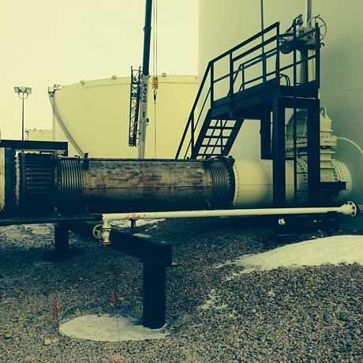

பைப் அழுத்த பகுப்பாய்வு எங்கள் சிறப்பு. நிபுணத்துவ பைப் பொறியியல் சேவைகளை வழங்குவதே எங்கள் முதன்மை கவனம். சிறப்பு பயிற்சி மற்றும் அனுபவத்தின் ஆழத்துடன் இணைந்து, நடைமுறை தீர்வுகளை வழங்க தொழில்துறையில் முன்னணி கருவிகள், தொழில்நுட்பங்கள் மற்றும் வழிமுறைகளைப் பயன்படுத்துகிறோம்.
நிலையான பைப் பகுப்பாய்வு ஆய்வுகள், அழுத்தம், எடை மற்றும் வெப்ப மாறிகள் உள்ளிட்ட சுற்றுச்சூழல் காரணிகளைக் கருத்தில் கொள்கின்றன. வெவ்வேறு திரவ வகைகள் இந்தக் காரணிகளைப் பாதிக்கலாம். பை இன்ஜினியரிங் நீராவி, கிளைகோல், எண்ணெய், நீர், எரிவாயு, ரசாயனங்கள் மற்றும் பிற திரவங்களில் குறிப்பிட்ட நிபுணத்துவத்தைக் கொண்டுள்ளது.

நிலையற்ற பகுப்பாய்வு, அழுத்தத் துடிப்பு, இயந்திர அதிர்வு, வால்வு மூடல், பம்ப் தொடக்கம்/நிறுத்தம், நிவாரண நிகழ்வுகள், சறுக்குதல் மற்றும் நீர் சுத்தி போன்ற நிலையற்ற திரவ பண்புகளைக் கையாள்கிறது.
இந்தக் காரணிகள் சாதாரண பைப்வழிகள் மற்றும் வசதி பைப்வழிகளில் இருக்கலாம்.
ரெசிப்ரோகேட்டிங் கம்ப்ரசர் பைப்கள் இயந்திர அதிர்வு அல்லது அழுத்த துடிப்புடன் எதிரொலிக்கக்கூடும்.
பைப்களில் தேக்கம்பலகட்ட அமைப்புகளில் ஏற்படுகிறது. திசையில் ஏற்படும் மாற்றங்களில் சேறு குறிப்பிடத்தக்க விசைகளை ஏற்படுத்துகிறது மற்றும் பைப் செயலிழப்பு அல்லது அருகிலுள்ள உபகரணங்கள் மற்றும் பைப்களுக்கு சேதம் ஏற்படலாம்.
இயந்திர அதிர்வு அளவீடு மற்றும் பகுப்பாய்வுஒரு அமைப்பின் தூண்டுதல் சக்திகளுக்கு ஏற்படும் நிலையற்ற பதிலை பகுப்பாய்வு செய்கிறது. இது தூண்டுதல் அதிர்வெண்களுடன் ஒரு எளிய இயற்கை அதிர்வெண் ஒப்பீடு, விசை நிறமாலை பகுப்பாய்வு அல்லது நேர வரலாற்று பகுப்பாய்வாக இருக்கலாம். சில நேரங்களில் அனுபவிக்கப்படும் அதிர்வின் தன்மை, அதிர்வு அளவீடுகள் காரணத்தை தீர்மானிக்க தேவைப்படுகின்றன. வடிவமைப்பு திருத்தங்கள் பயனுள்ளதாக இருப்பதை உறுதிப்படுத்த அளவீடுகளையும் பயன்படுத்தலாம். ஓட்டத்தால் தூண்டப்பட்ட அதிர்வு சிக்கல்கள், துடிப்பு அல்லது ஒலி அதிர்வு சூழ்நிலைகள் ஆகியவற்றில் நாங்கள் அனுபவம் பெற்றுள்ளோம்.
நீர் சுத்தி பகுப்பாய்வு பம்புகள், டர்பைன்கள் மற்றும் வால்வுகளில் அழுத்தம் அதிகரிப்பை ஏற்படுத்தக்கூடிய நிகழ்வுகளை நிவர்த்தி செய்கிறது. நீர் சுத்தி நிகழ்வுகளுக்கான சாத்தியமான காரணங்களைக் கண்டறிந்து நீக்குவது தோல்வி அபாயத்தைக் குறைக்கிறது. திடீர் வால்வு மூடல் அல்லது பம்ப் நிறுத்தம், வசதிகள் மற்றும் உபகரணங்களைத் தொடங்குதல்/நிறுத்துதல் ஆகியவற்றால் நீர் சுத்தி ஏற்படலாம். இந்த நிகழ்வுகள் எதிர்பாராத மற்றும் சீரற்ற திரவ விசைகளை ஏற்படுத்தக்கூடும்; தோல்வியைத் தடுக்க உபகரணங்கள் மற்றும் அமைப்புகள் இதை எதிர்பார்த்து வடிவமைக்கப்பட வேண்டும்.


பைப் பதித்தல் என்பது பல்வேறு உபகரணங்களை ஒன்றாக இணைத்து ஒரு செயல்முறை அமைப்பை உருவாக்குகிறது. ஒவ்வொரு உபகரணமும் பைப் பதிப்பிலிருந்து எவ்வளவு சுமையைத் தாங்க முடியும் என்பதற்கான வரம்புகளைக் கொண்டுள்ளது. அனைத்து வடிவமைப்புகளும் பரிந்துரைக்கப்பட்ட தரநிலைகள், குறியீடுகள் மற்றும் வெவ்வேறு உபகரணத் துண்டுகளுக்கு விருப்பத்தேர்வுகளைப் பின்பற்றுவதை பை பொறியியல் உறுதி செய்கிறது.
உபகரண வகைகளில், எடுத்துக்காட்டாக: காற்று குளிர்விப்பான்கள், அமுக்கிகள், விரிவாக்கிகள், பம்புகள், அழுத்தக் கலன்கள், தொட்டிகள், வெப்பப் பரிமாற்றிகள், நீராவி ஜெனரேட்டர்கள் மற்றும் விசையாழிகள் ஆகியவை அடங்கும்.
ஸ்ரீ அரங்கன் நிறுவனத்திற்கு ஆலை மற்றும் வசதி பைப் பதித்தல் தொடர்பான அனைத்து அம்சங்களிலும் அனுபவம் உள்ளது, மேலும் பின்வரும் வசதி வகைகளில் நிபுணத்துவம் பெற்றது:

பல்வேறு பைப் பொறியியல் விவரக்குறிப்புகள், தரநிலைகள் மற்றும் தேர்வுகளை முடிவு செய்வதற்கு சிறப்பு நிபுணத்துவம் மற்றும் அறிவு தேவை. ஸ்ரீ அரங்கன் பின்வரும் பிரிவுகளில் குறிப்பிட்ட ஆலோசனைகளை வழங்குகிறது: